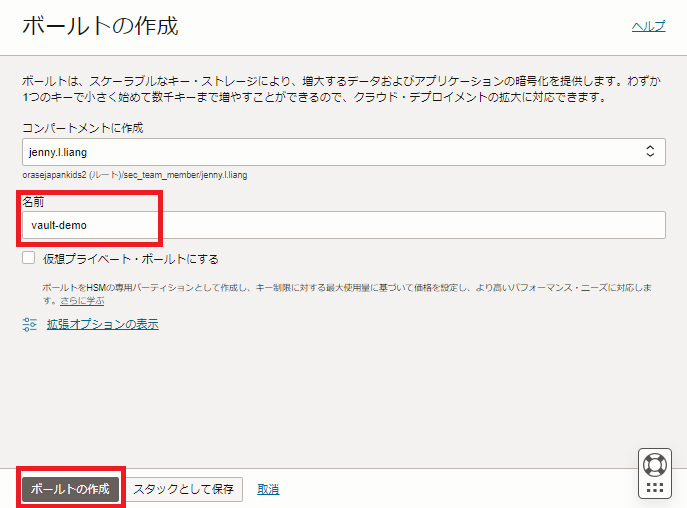
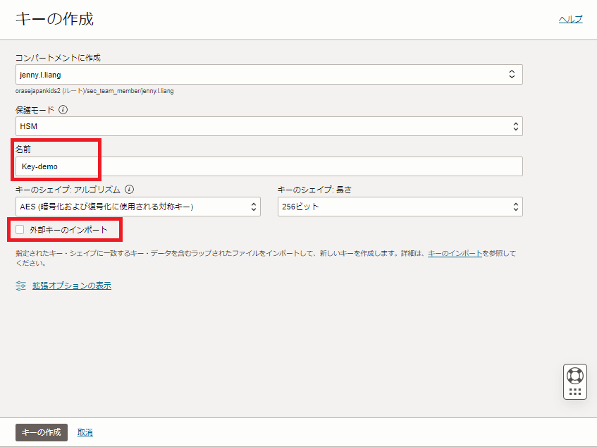
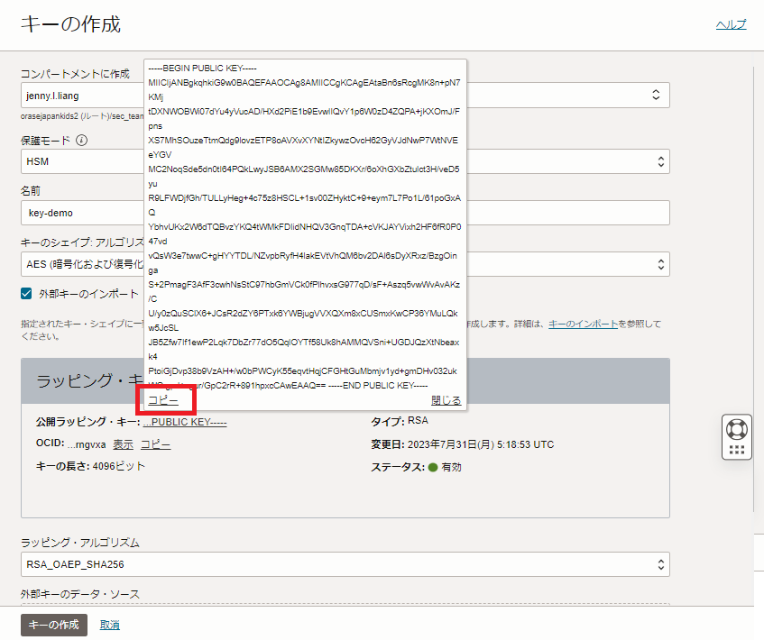
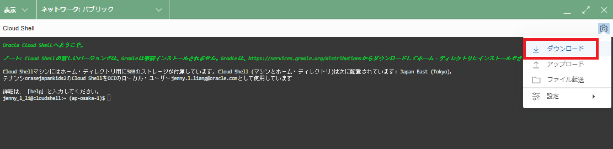
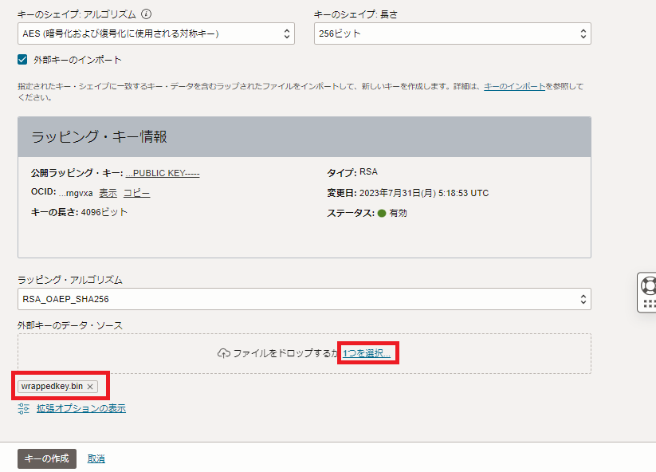
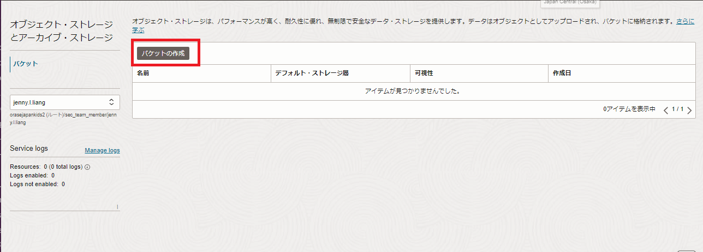
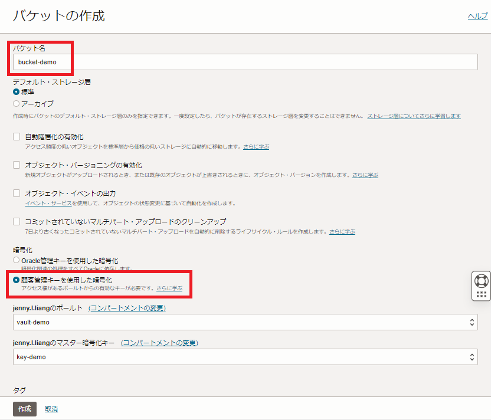
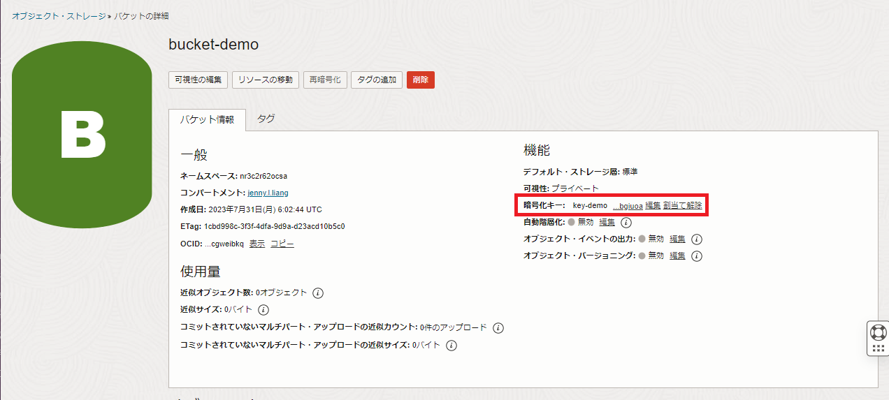
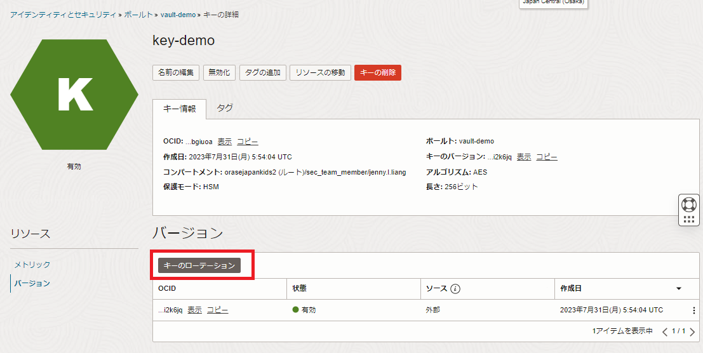

OCI Vaultはユーザーがセキュアに暗号鍵や、パスワードなどの”シークレット”を管理、運用できる鍵管理サービスです。
通常、OCI上のストレージサービスは、デフォルトでオラクルが管理する暗号鍵で暗号化されます。 OCI Vaultサービスを使用すると、ストレージサービスの暗号化に使用する暗号鍵を、オラクル管理の暗号鍵からユーザー管理の暗号鍵に変更することができます。
また、OCI Vaultサービスを利用するメリットとして、OCI IAMや監査ログによるアクセス管理、FIPS 140-2 Security Level 3の要件への対応、ユーザーによる暗号鍵のローテーションやバックアップを実施することができる、などが挙げられます。
OCI Vaultサービスで管理できる暗号鍵の暗号化アルゴリズムなどの詳細はドキュメントをご参照ください。
本チュートリアルでは、Vaultサービスでユーザー管理の暗号鍵を使用してObject Storageを作成する手順について紹介します。
所要時間 : 約20分
前提条件 :
- OpenSSLをクライアント端末、もしくは任意のLinuxの環境にインストールしていること（本チュートリアルではデフォルトでOpenSSLがインストールされているCloud Shellを使用します）
注意 :
- ※チュートリアル内の画面ショットについてはOracle Cloud Infrastructureの現在のコンソール画面と異なっている場合があります。
1. IAMポリシーの作成
Vaultサービスに格納された暗号鍵を指定してObject Storageを作成するには、Object StorageがVaultサービスにアクセスする権限が必要です。 Object Storageを作成するコンパートメントにて、以下IAMポリシーを作成します。
allow service objectstorage-<リージョン名> to use keys in compartment <コンパートメント名>
例）大阪リージョンの場合
allow service objectstorage-ap-osaka-1 to use keys in compartment <コンパートメント名>
2. Vaultの作成
OCIコンソール → アイデンティティとセキュリティ → ボールト → 「ボールトの作成」ボタンをクリックします。

Vaultの作成画面で任意の名前を入力し、「ボールトの作成」ボタンをクリックします。

1~2分でボールトの作成が完了し、ステータスがアクティブになります。
3. 暗号鍵の作成とインポート
作成したボールトの詳細画面の「キーの作成」ボタンをクリックします。

「キーの作成」画面にて任意の名前を入力し、「外部キーのインポート」にチェックを入れます。
※キーのシェイプ、アルゴリズムはデフォルトのAES, 256ビットのまま進めます。

ラッピング・キー情報が表示されるので、「公開ラッピング・キー」をコピーします。

Cloud Shellなど、OpenSSLがインストールされている環境で公開ラッピング・キーをpemファイルとして保存します。
$ vi publickey.pem
-----BEGIN PUBLIC KEY-----
MIICIjANBgkqhkiG9w0BAQEFAAOCAg8AMIICCgKCAgEAtaBn6sRcgMK8n+pN7KMj
tDXNWOBWi07dYu4yVucAD/HXd2PiE1b9EvwlIQvY1p6W0zD4ZQPA+jKXOmJ/Fpns
XS7MhSOuzeTtmQdg9lovzETP8oAVXvXYNtIZkywzOvcH62GyVJdNwP7WtNVEeYGV
MC2NoqSde5dn0tI64PQkLwyJSB6AMX2SGMw85DKXr/6oXhGXbZtulct3H/veD5yu
R9LFWDjfGh/TULLyHeg+4c75z8HSCL+1sv00ZHyktC+9+eym7L7Po1L/61poGxAQ
YbhvUKx2W6dTQBvzYKQ4tWMkFDIidNHQV3GnqTDA+cVKJAYVixh2HF6fR0P047vd
vQsW3e7twwC+gHYYTDL/NZvpbRyfH4lakEVtVhQM6bv2DAl6sDyXRxz/BzgOinga
S+2PmagF3AfF3cwhNsStC97hbGmVCk0fPlhvxsG977qD/sF+Aszq5vwWvAvAKz/C
U/y0zQuSClX6+JCsR2dZY6PTxk6YWBjugVVXQXm8xCUSmxKwCP36YMuLQkw5JcSL
JB5Zfw7If1ewP2Lqk7DbZr77dO5QqlOYTf58Uk8hAMMQVSni+UGDJQzXtNbeaxk4
PtoiGjDvp38b9VzAH+/w0bPWCyK55eqvtHqjCFGHtGuMbmjv1yd+gmDHv032ukWG
gpJ+zgur/GpC2rR+891hpxcCAwEAAQ==
-----END PUBLIC KEY-----
以下コマンドで暗号鍵を作成し、公開ラッピング・キーで暗号鍵をラッピングします。
$ openssl rand 32 > aes_key.bin
$ openssl pkeyutl -encrypt -in "aes_key.bin" -inkey "publickey.pem" -pubin -out "wrappedkey.bin" -pkeyopt rsa_padding_mode:oaep -pkeyopt rsa_oaep_md:sha256
ラッピングされた暗号鍵が「wrappedkey.bin」として出力されるので、ファイルをクライアント端末にダウンロードします。
※Cloud Shellの場合、ターミナル右上のメニュー → ダウンロードから、ホームディレクトリにある任意のファイルをダウンロードすることが出来ます。

「キーの作成」画面に戻り、外部キーのデータ・ソースから、「wrappedkey.bin」を選択し、「キーの作成」ボタンをクリックします。
※ラッピング・アルゴリズムはデフォルトの「RSA_OAEP_SHA256」のまま進めます。

以上の手順で暗号鍵の作成とインポートは完了です。 インポートした暗号鍵は「マスター暗号化キー」としてOCI Vaultサービスに格納されます。
4. Object Storageの作成
OCIコンソール → ストレージ → オブジェクト・ストレージとアーカイブ・ストレージ → バケット → 「バケットの作成」ボタンをクリックします。

「バケットの作成」画面にて任意のバケット名を入力し、「顧客管理キーを使用した暗号化」にチェックします。

手順3で作成したボールトとマスター暗号化キーを選択し、「作成」ボタンをクリックします。
以上の手順で、ユーザーがインポートした暗号鍵を使用してObject Storageを作成することができました。

また、バケットの暗号化に使用したマスター暗号化キーはボールト → ボールト詳細 → マスター暗号化キーの詳細、「バージョン」のメニューからユーザーが好きなタイミングでローテーションすることができます。

キーのローテーション時に、再度公開ラッピング・キーを使用して新しい暗号鍵をラッピングし、インポートすることも可能です。